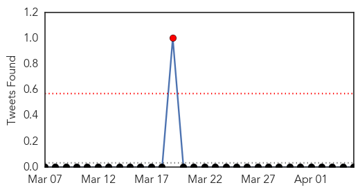

30 Day Trends
Web: 2 alerts, 0 warnings
Twitter: 5 alerts, 0 warnings
Top Articles:
- 0.995
- 50% world population at risk of vector-borne diseases
- 0.994
- Steps to curb vector-borne diseases sought
- 0.993
- Half the population of the Americas is at risk of diseases carried by small insects - World
- 0.986
- The Island
- 0.984
- Preventive measures urged to control vector-borne diseases
- 0.979
- World Health Day event: ‘Preventative strategy needed for dengue virus’
- 0.974
- WHO urges Carib'n to take steps to prevent vector-borne diseases
- 0.946
- Call for steps to control vector-borne diseases
- 0.785
- Dengue to raise its ugly head again
- 0.687
- Solomon Islands: Fears for deadly outbreak of dengue fever in flood and quake hit Solomons
- 0.592
- District allied departments asked to take responsibility
- 0.534
- Fears for deadly outbreak of dengue fever in flood and quake hit Solomons - Solomon Islands
Top Tweets:
-
No tweets found for Apr 05, 2014
Web/News Articles

Tweets
Article Locations

Article Confidences